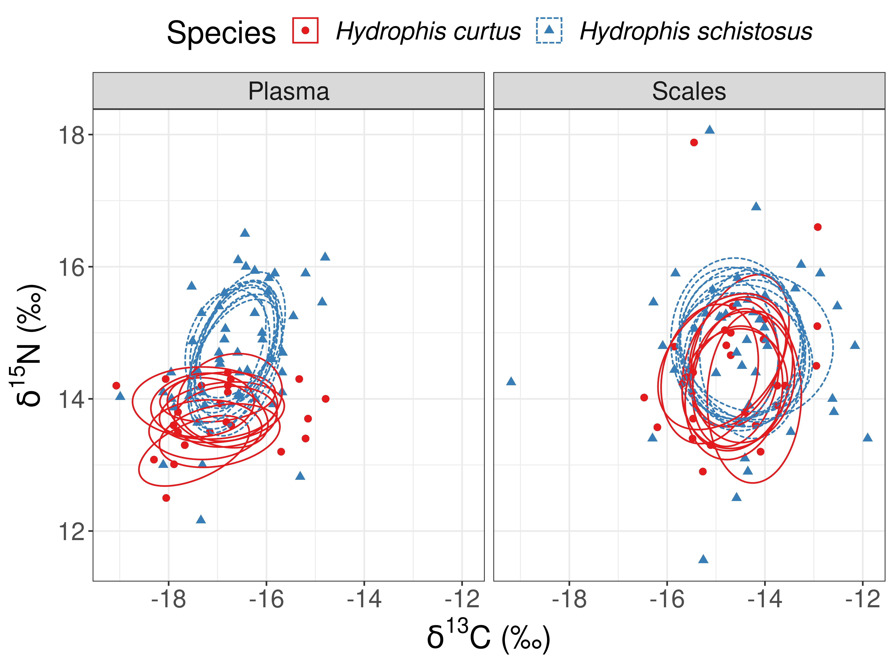

4 Difference in resouce use betweek H. curtus and H. schistosus
Carbon and Nitrogen isotope ratios were compared across snake species. Plasma and scale samples were used to compare short term and long term resource use respectively. Multiples metrics including niche width (SEA), variance (range), overlap (%) were used.
This section needs to be revised with new data from CEaS
# importing stable isotope data
sia = read.csv("./Data/Stable Isotope Data_CEAS_241119.csv")
# joining SI data to snake data
sia_snakes = sia%>%
filter(Tissue.type != "Gut Content")%>% # removing prey SI data
left_join(snakes, 'Field.Code')%>%
mutate(Lab = "CEAS")%>%
# renamving variables for ease of understanding
dplyr::rename(Delta.Carbon = d13C..vpdb. , Delta.Nitrogen = d15N..N2.air., Date = Date.x)%>%
# selecting relevant variables
dplyr::select(Date, Field.Code, Species, Snout.to.Vent..cm., Sex, Gravid, Class,
Gear.Type, Fishing.Location, Depth.Caught..m.,
Plasma.Color, Delta.Carbon, Delta.Nitrogen, Lab,
Tissue.type, Month, Year)
# creating labels for figures
D.C = expression({delta}^13*C~'\u2030')
D.N = expression({delta}^15*N~'\u2030')4.1 Number of tissue samples analysed
sia_snakes%>%
filter(Tissue.type == "Plasma" | Tissue.type == "Scales")%>%
filter(Species == "Hydrophis curtus" | Species == "Hydrophis schistosus")%>%
group_by(Species, Tissue.type)%>%
count()%>%
spread(Tissue.type, n)| Species | Plasma | Scales |
|---|---|---|
| Hydrophis curtus | 6 | 12 |
| Hydrophis schistosus | 27 | 25 |
4.2 Summary statistics on Carbon and Nitrogen stable isotopes
Mean ± standard deviation (parts per mil)
sia_snakes%>%
filter(Tissue.type == "Plasma" | Tissue.type == "Scales")%>%
filter(Species == "Hydrophis curtus" | Species == "Hydrophis schistosus")%>%
gather(c("Delta.Carbon", "Delta.Nitrogen"), key = "Isotope", value = "value")%>%
group_by(Species, Tissue.type, Isotope)%>%
summarise(Mean = round(mean(value, na.rm = T), 2),
sd = round(sd(value, na.rm = T), 2),
n = sum(!is.na(value)))%>%
unite("Mean.sd", Mean:sd, sep = "±")%>%
dplyr::select(-n)%>%
spread(Isotope, Mean.sd)%>%
arrange(Tissue.type, Species)| Species | Tissue.type | Delta.Carbon | Delta.Nitrogen |
|---|---|---|---|
| Hydrophis curtus | Plasma | -17.6±0.6 | 13.23±0.56 |
| Hydrophis schistosus | Plasma | -16.72±1.14 | 14.45±1.12 |
| Hydrophis curtus | Scales | -15.44±0.59 | 14.57±1.26 |
| Hydrophis schistosus | Scales | -14.95±1.25 | 15.13±1.14 |
Both \(\delta^{15}N\) and \(\delta^{13}C\) were enriched in H. schistosus compared to H. curtus
4.3 Difference in niche width between sea snakes
We used the SIBER package (Jackson et al. 2011) for to compare isotopic niche width and overlap between H. curtus and H. schistosus.
# importing required libraries for stable isotope analysis
library(SIBER)
# Formating SI data for use with SIBER
siber_snakes <- sia_snakes%>%
dplyr::select(Delta.Carbon, Delta.Nitrogen, Tissue.type, Species)%>% # selecting required variables
# renaming varibale as per requirement for SIBER
dplyr::rename(iso1 = Delta.Carbon,
iso2 = Delta.Nitrogen,
group = Tissue.type,
community = Species)%>%
# removing missing data points
filter(!is.na(group),
!is.na(iso1),
!is.na(iso2),
community == "Hydrophis schistosus" | community == "Hydrophis curtus")%>%
droplevels()
# Creating a SIBER object for analysis
siber.snakes = createSiberObject(siber_snakes)4.3.1 Maximum likelihood estimate of SEA
SEA.ML_snakes <- groupMetricsML(siber.snakes)
# Clean table
data.frame(t(SEA.ML_snakes))%>%
rownames_to_column("Species.Tissue")%>%
separate(Species.Tissue, c("Species", "Tissue"), sep = "([\\.\\?\\:])")%>%
arrange(Tissue, Species)| Species | Tissue | TA | SEA | SEAc |
|---|---|---|---|---|
| Hydrophis curtus | Plasma | 0.74470 | 0.6368364 | 0.8491152 |
| Hydrophis schistosus | Plasma | 10.19485 | 3.1208774 | 3.2851342 |
| Hydrophis curtus | Scales | 4.58370 | 2.4210563 | 2.7236883 |
| Hydrophis schistosus | Scales | 20.43275 | 4.4823982 | 4.7065181 |
As maximum likelihood can only porivde point estimates of SEA, a bayesian model was used to provide more robust comparison of niche width.
Add comparisoon of ML SEA here
4.3.2 Bayesian estimate of SEA
We estimate the standard ellipse area (SEA) of each species in isotopic space by fitting a multivaria normal model to the isotope data using bayesian inference.
# Setting options for running jags
parms <- list() # list of parameters fir JAGS
parms$n.iter <- 2*10^4 # number of iterations to run the model for
parms$n.burnin <- 1*10^3 # discard the first set of 1000 values
parms$n.thin <- 10 # thin the posterior by this many
parms$n.chains <- 2 # run this many chains
# Defining vague priors
priors <- list()
priors$R <- 1 * diag(2)
priors$k <- 2
priors$tau.mu <- 1.0E-3
# Fitting the model and getting posteriors
snakes.post <- siberMVN(siber.snakes, parms, priors)
# estimating standard ellipse area from posteriors
SEA.B_snakes <- siberEllipses(snakes.post)
# Creating a table of posterior estiamtes of Standard ellipse area
ccc <- names(snakes.post)
colnames(SEA.B_snakes) <- ccc
SEA.B_snakesdf = data.frame(SEA.B_snakes, check.names = F)%>%
rowid_to_column(var = "run")%>%
gather(Species.Tissue, SEA.B, -run)%>%
separate(Species.Tissue, c("Species","Tissue"), sep = "([\\.\\?\\:])")# Summarising Bayesian estimate of SEA
SEA.B_snakesdf%>%
group_by(Species, Tissue)%>%
summarise(`Mean SEAb` = mean(SEA.B),
`Standard deviation` = sd(SEA.B))%>%
arrange(Tissue, Species)| Species | Tissue | Mean SEAb | Standard deviation |
|---|---|---|---|
| Hydrophis curtus | Plasma | 1.086297 | 0.6113671 |
| Hydrophis schistosus | Plasma | 2.717488 | 0.9764177 |
| Hydrophis curtus | Scales | 4.710867 | 1.0523314 |
| Hydrophis schistosus | Scales | 3.303134 | 0.7669954 |
Add comparisoon of Bayesian SEA here
4.3.3 Testing difference in species niche area by tissue type
SEA.B_snakesdf%>%
spread(key = Species, value = SEA.B)%>%
group_by(Tissue)%>%
summarise(`P(HS > HC)` = sum(`Hydrophis schistosus` > `Hydrophis curtus`)/n())| Tissue | P(HS > HC) |
|---|---|
| Plasma | 0.95450 |
| Scales | 0.12525 |
Hypothesis: H. schistosus SEA is larger than H. curtus
While niche width is slightly larger in H. schistosus, it is not significantly different. The posterior distribution of SEA^b has right skewed long tail (masked by the limits of the graph for visual clarity) possibly due to the low sample size. Niche width doesn’t seem to change accross different tissue types either, indicating stability over variying periods of assimilation.
Update inference
4.4 Visualising posterior ellipses to compare species isotopic niche
# how many of the posterior draws do you want?
n.posts <- 10
# decide how big an ellipse you want to draw
p.ell <- pchisq(1,2)
set.seed(1)
# a list to store the results
snake_ellipses <- list()
# loop over groups
## generating list with length groups*communities
for (i in 1:length(snakes.post))
{
# a dummy variable to build in the loop
ell <- NULL
post.id <- NULL
# randomly extracting parameters for n samples from posterior distribution
for ( j in sample(1:4000, n.posts)){
# covariance matrix
Sigma <- matrix(snakes.post[[i]][j,1:4], 2, 2)
# mean
mu <- snakes.post[[i]][j,5:6]
# ellipse points
out <- ellipse::ellipse(Sigma, centre = mu , level = p.ell)
ell <- rbind(ell, out) #ellipse points from current loop
post.id <- c(post.id, rep(j, nrow(out))) #adding loop number (rep)
}
ell <- as.data.frame(ell) # data frame of ellipse points from all draws
ell$rep <- post.id # adding draw id
snake_ellipses[[i]] <- ell # creading list of draws from each community.group
}
snake.ellipses <- bind_rows(snake_ellipses, .id = "id") # creating a data frame of post ellipse draws
# now we need the group and community names
# extract them from the ellipses.posterior list
group_comm_names <- names(snakes.post)[as.numeric(snake.ellipses$id)] # extractin community.group from posteriors
# split them and conver to a matrix, NB byrow = T
split_group_comm <- matrix(unlist(strsplit(group_comm_names, "[.]")),
nrow(snake.ellipses), 2, byrow = TRUE) # splitting communit and group
snake.ellipses$community <- split_group_comm[,1]
snake.ellipses$group <- split_group_comm[,2]
snake.ellipses <- dplyr::rename(snake.ellipses, iso1 = x, iso2 = y, Species = community, Tissue = group)
# Plotting 10 randomly sampled ellipses
siber_snakes%>%
rename(Species = community,
Tissue = group)%>%
ggplot(aes(iso1, iso2, col = Species))+
geom_point(aes(shape = Species), size = 2)+
ylab(expression(paste(delta^{15}, "N (\u2030)")))+
xlab(expression(paste(delta^{13}, "C (\u2030)")))+
geom_polygon(data = snake.ellipses,
mapping = aes(iso1, iso2, group = rep, linetype = Species, col = Species),
fill = NA)+
scale_color_grey()+
facet_wrap(~Tissue)+
theme(legend.text = element_text(face = "italic"))
Figure 3: Bayesian ellipses in isotopic space describing difference in niche width and resource use between H. curtus and H. schistosus.
As seen in the SEA estimation, low sample size for H. curtus causes greater uncertainty in the estimation of standar ellipses even with bayesian inference. Both carbon and nitrogen isotpes seem to be enriched in scales when compared to plasma. Degree of overlap appears to be low for both tissues.
- Samples sizes for H. curtus in both tissues need to be increased despite using bayesian methods
- Unusual outlier in H. schistosus scales data needs to be checked
Update inference
4.5 Relative overlap in bayesian standard ellipses
# Overlap in ellipse based on plasma samples
snake.p.overlap <- bayesianOverlap(ellipse1 = "Hydrophis schistosus.Plasma" , #Group 1
ellipse2 = "Hydrophis curtus.Plasma", #Group 2
snakes.post, #list with posteriour dists
draws = 100, p.interval = 0.95, n = 100) #params
snake.p.overlap <- snake.p.overlap%>%
mutate(Turnover = "Short-term") # plasma represents short - term turnover in isotope ratios
# Overlap in ellipse based on scale samples
snake.s.overlap <- bayesianOverlap(ellipse1 = "Hydrophis schistosus.Scales" , #Group 1
ellipse2 = "Hydrophis curtus.Scales", #Group 2
snakes.post, #list with posteriour dists
draws = 100, p.interval = 0.95, n = 100) #params
snake.s.overlap <- snake.s.overlap%>%
mutate(Turnover = "Long-term") # scales represent long term turn over in isotope ratios
# Creating a combined data frame
snake.overlap <- bind_rows(snake.p.overlap, snake.s.overlap)
# Plotting overlap
snake.overlap%>%
mutate(prop.overlap = overlap/(area1 + area2 - overlap))%>% #relative overlap
ggplot(aes(prop.overlap))+
geom_histogram(bins = 10, col = "black")+
#geom_vline(aes(xintercept = mean(prop.overlap), col = "red"), size = 1)+
labs(x = "Proportion of overlap", y = "Number of samples")+
scale_color_discrete(name = "Mean")+
facet_wrap(~Turnover)
# summarising overlap in standard ellipses
snake.overlap%>%
group_by(Turnover)%>%
# calculating relative overlap in bayesian standard ellipses
mutate(prop.overlap = overlap/(area1 + area2 - overlap))%>%
summarise(`Average overlap` = mean(prop.overlap),
`Standard deviation` = sd(prop.overlap))| Turnover | Average overlap | Standard deviation |
|---|---|---|
| Long-term | 0.4095344 | 0.0789993 |
| Short-term | 0.0975700 | 0.0803418 |
Overlap between H. curtus and H. schistosus seems to be high in when comparing long term resource use, i.e., scales.
However, overlap between H. curtus and H. schistosus seems to be very low when comparing short term resource use, i.e., plasma.
This difference could be caused by:
- low sample size for H. curtus
- differences in processing of scales and plasma, i.e., lipid extraction
Update inference
4.6 References
Section 4.3.2 was adapeted from Andrew Jackson’s Github example.
Section 4.4 was adapted from the SIBER Vignette.
Section 4.5 was adapted from this Vignette.